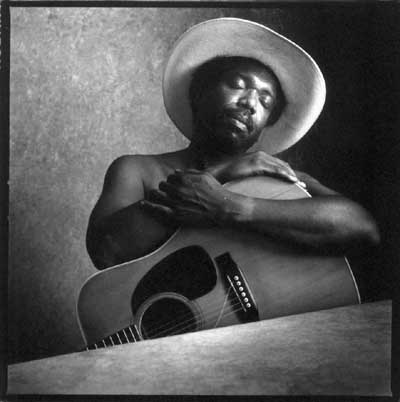

"Philadelphia" Jerry Ricks

«Филадельфия» Джерри Рикс - это, вероятно, самое главное активное связующее звено между прошлым, настоящим и будущим традиционного блюза. Его восхождение на сцене было предопределено глубокими духовными причинами и самой эволюцией американской музыки».Отис Уильямс, Chicago Blues Annual
Уроженец Филадельфии, Джерри Рикс в настоящее время живет в Дельте Миссисипи. Он объездил весь мир и выступал с такими признанными блюзменами, как Сон Хаус, Брауни Макги, Мэйнс Липскоум, Слипи Джон Эстес, Скип Джеймс, Фарри Льюис, Букка Уайт и многими другими.
В шестидесятые, времена возрождения блюза, Джерри приглашал в кафе в Филадельфии, где он работал, многих блюзовых музыкантов. Те учили его традиционному блюзу и повлияли, впоследствии, на всю его музыкальную карьеру и жизненный путь. Семидесятые и восьмидесятые Джерри провел в беспрерывных странствиях по обе стороны Атлантики. Как и многие блюзмены, выступавшие в тот период, когда для блюза в США наступили не лучшие времена, Рикс обрел новую аудиторию в Европе.
В начале девяностых Рикс решает вернуться домой, но не туда где он провел годы своей юности, а в Дельту - родину его музыки и тех многих блюзменов, которые были его друзьями, коллегами и наставниками все эти годы.
«Филадельфия» Джерри Рикс выпустил свой первый американский альбом в возрасте 57 лет. Deep In The Well - коллекция сольных акустических блюзов, где музыкант отдает дань почтения своим великим учителям и, в то же время, выступает как творец собственных произведений. Его подход к блюзу не академический, не исследовательский и не новаторский; этот музыкант просто играет то, что он чувствует - так же, как легенды этого жанра интерпретировали блюз на протяжении почти сотни лет.
Биографическая справка
Родился 22 мая 1940 года в Филадельфии, штат Пенсильвания
1959 - 1970
Учился и одновременно выступал с, вероятно, всеми великими блюзменами
той эпохи. Легендарные музыканты, у которых брал уроки и которым аккомпанировал
Джерри в те годы - это Брауни Макги, Гитар Уилсон, Скип Джэймс, Гари Дэвис,
Бади Мосс, Чэмпион Джек Дюпре, Сони Терри, Мемфис Слим, Микки Бэйкер,
Блайнд Джон Дэвис, Уилли Мэйбон, Уошборд Слим, Фарри Льюис, Биг Джо Уиллиамс,
Сон Хаус, Лонни Джонсон, Лайтин Хопкинс, Миссисипи Фред Макдауэлл, Элизабет
Коттон, Роберт Уилкинс, Миссисипи Джон Харт, Мэйнс Липскоум, Джесси Фуллер,
Слипи Джон Эстес, Сэмми Прайс, Роберт Пит Уильямс.
Рикс также гастролировал в Восточной Африке с «Бади Гай Блюз Бэнд» в рамках программы Гос. Департамента США в Апреле 1969 года.
Кроме этого, Рикс участвовал в проекте Ральфа Ринцера и Мака Маккормика из Отдела Изучения Народной Жизни института «Смитсониан» в качестве ассистента-исследователя. В начале 60-х брал уроки и выступал с Доком Уотсоном.
Был преподавателем Народного отделения Университета Колорадо, где обучал традиционному гитарному стилю американского Юга.
1970 - 1990
Жил и выступал в Западной Европе, где дал более 2000 концертов на радио,
телевидении, фестивальных и концертных сценах, а так же на семинарах для
студентов. Также активно выступал в Восточной Европе, был в России.
Принимал участие почти во всех крупнейших блюзовых и джазовых фестивалях Восточной и Западной Европы. Записал более дюжины альбомов в шести странах в сотрудничестве с Оскаром Кляйном. Среди записей - первый аутентичный джазовый альбом, изданный в Югославии и Венгрии. И, конечно же, как и подобает блюзовому музыканту, постоянно выступал в клубах и небольших театрах.
1990 - настоящее время
Живет в Кларксдйле, штат Миссисипи. Недавние концертные турне прошли в
Испании, Швейцарии и Германии. Выступал на множестве фестивалей и концертов:
Blues Week в Элкинсе, Port Townsend в Сваннаноа, Blues in the Schools.
Участвовал в телетрансляции из Центра Южного Фольклора в Мемфисе. Среди
радиотрансляций - выступления на Beale Street Caravan и на BBC Radio 4
series, проект Deep Blue.
1998 Тройной номинант на премию W.C. Handy Award в категориях: Акустический Блюзовый Артист Года, Акустический Блюзовый Альбом Года и Самый Долгожданный Блюзовый Альбом Года за диск Deep In The Well, записанный на Rooster Blues Records.
2001 Двойной номинант на премию W.C. Handy Award в категориях: Акустический Блюзовый Артист Года и Акустический Блюзовый Альбом Года за диск Many Miles Of Blues, записанный на Rooster Blues Records.
Недавние фестивальные выступления в США
New York Blues Festival
Sunflower Blues Festival
Pocono Blues Festival
Music City Blues Celebration
Chicago Blues Festival
Tributes to Rev. Gary Davis
River Blues Festival (Philadelphia)
Merle Watson Memorial Festival
Tunica Blues Festival
Концертные выступления
"Music of the River"
"Project America"
The Outpost - Albuquerque
University of Maryland
Black and White Blues
Дискография
1977 "Philadelphia" Jerry Ricks & Oscar Klein: Two Guitars
- One Soul
ZYT
1979 "Philadelphia" Jerry Ricks & Oscar Klein: Guitar Boogie
Woogie
Meistersinger Music Production
1980 "Philadelphia" Jerry Ricks & Oscar Klein: Low Light
Blues
L+R Records
1980 "Philadelphia" Jerry Ricks & Oscar Klein: Jazz Roots
L+R Records
1980 The First Blues Sampler (сборник)
L+R Records
1984 Help Me Blues
Jugoton
1984 International Jazz Fair - Zagreb'83
Jugoton
1985 Been There Before
Sirak
1986 Live In Zorn
Megaphone
1987 Empty Bottle Blues
Radioton
1987 "Philadelphia" Jerry Ricks & Oscar Klein: Blues Panorama
Vol. 1
Koch International
1990 "Philadelphia" Jerry Ricks & Oscar Klein: Blues Panorama
Vol. 2
Koch International
1991 True Blues
Traditional Line
1997 Deep In the Well
Rooster
2000 Many Miles of Blues
Rooster
2001 The Philadelphia Folk Festival (rec. 1963)
Sliced Bread
Выдержки из прессы
«Филадельфия» Джерри Рикс увлекает слушателей в мир Кантри Блюза - мир
его истории, широкой гаммы чувств, великих артистов. Джерри Рикс - один
из немногих музыкантов своего поколения, которым посчастливилось встретиться
в жизни с великими мастерами традиционного народного блюза и учиться у
них. Рикс не только хранит живые традиции блюза, он неустанно открывает
в них что-то новое и расширяет их рамки, сочиняя и исполняя свои собственные
уникальные композиции; он неподражаемо играет на гитаре и поет».
Blues Revue
«Превосходная коллекция тщательно отобранных, совершенных гитарных соло...
Rooster Records может похвастаться еще одним великим черным кантри-блюз
музыкантом».
Ред Лик, Wales
«Это настоящий «традиционный блюз» с его сердцем и душой.:На фоне многих
замечательных музыкантов, «Филадельфия» Джерри Рикс - это самые «сливки»
блюза».
Billtown Blues Notes
«Среди мастеров акустической гитары выделяется «Филадельфия» Джерри Рикс,
чей альбом Deep In The Well вызывает в воображении гитарные стили Пьемонта
и Дельты Миссисипи.:Вдобавок к этому, музыкант владеет своими «фирменными»
гитарными приемами, достойными внимания. Захватывающее путешествие к глубинам
аутентичного блюза».
Jazz Times Magazine
«Приверженец акустических гитарных традиций Юга, Рикс со своей Martin
D-76 одинаково мастерски владеет блюзом и спиричуэлзом Дельты и Пьемонта.
После того, как я прослушал 70-минутный альбом Deep In The Well, я жалел
только об одном - что это был не двойной CD!».
Арт Типалди, Blues Revue
«Мистер Рикс - это мастер классических народных блюзовых стилей; большой
палец его правой руки неуклонно держит ритм, в то время как пальцы левой
выводят филигранные синкопы, жонглируя иногда сразу двумя-тремя регистрами.
Своим хрипловатым голосом с доверительными интонациями «Миссисипи» Джона
Харта, он поет о тоске по родине и о спасении в блюзе».
Джон Пэрелес, The New York Times
«Если у нас «акустическое» настроение, то давайте уделим благодарное
внимание новому сету «Филадельфии» Джерри Рикса Deep In The Well. Мягко,
но настойчиво, он утверждает свой статус «хранителя традиций» американского
кантри-блюза: Рикс учился, прежде всего, у старых мастеров, таких как
«Миссисипи» Джон Харт и Сон Хауз, и наполнился присущим им духом спокойствия
и мудрости. Его интерпретации таких песен, как "Avalon" Харта и "Born
with the Blues" Брауни Макги, и сам способ записи вне всяких сомнений
относятся к старому доброму прошлому. Слушатель, привыкший к массовой
музыкальной продукции, вполне может почувствовать себя обманутым. Но попробуйте
впустить настоящий блюз в вашу душу и вы останетесь в его власти на весь
день».
Джонатан Тэкифф, Philadelphia Daily News
«:Глубоко прочувствованный кантри-блюз, согревающий сердце. Уроженец
Филадельфии, Рикс шел по стопам великих блюзменов, таких, какими были
Брауни Макги и Гари Дэвис в конце 50-х - начале 60-х... Рикс в полной
мере использует свой богатейший опыт: будь то классическая "James Alley
Blues", или подлинная мелодия Северной Миссисипи "Change Your Ways"
- все они полны оригинальности и тихо кипящей страсти».
Билл Эллис, The Commercial Appeal (Мемфис)
«Вы знаток и ценитель «Миссисипи» Фреда Макдауэлла, «Миссисипи» Джона
Харта, «Тексаса» Александра, в вашей коллекции пластинки «Мемфиса» Слима
и «Луизианы» Реда. Теперь, так долго бывший неуловимым для Америки «Филадельфия»
Джерри Рикс, «попался», наконец, на пленку. Рикс играл практически со
всеми выдающимися блюзменами в шестидесятых годах, и бесчисленные выступления
тех лет накладывают на его собственный материал отпечаток спокойствия
и мудрости. Кажется, что Джерри, со своей чисто звучащей гитарой Martin
D-76 в руках, мог бы точно так же играть для вас, сидя у своего кухонного
стола. Большинство из 14 песен выдержаны в спокойных, матовых тонах, где
негромкому вокалу аккомпанируют мягкие гитарные переборы: Благородный
акустический блюз:».
Дэннис Розански, Blues Rag
«Рикс вернулся в Штаты в 1990, и последовавшие за этим многочисленные
концерты привели к выходу его первого большого альбома, записанного в
Америке, Deep In he Well, где он мастерски, без малейшего налета слащавой
банальности или имитационности, воссоздает дух и звучание своих музыкальных
предшественников. От них же музыкант унаследовал тот спокойный, немного
мрачный юмор, бывший отличительной чертой замечательных блюзменов прошлой
эпохи. Рикс делится с нами своим внутренним миром и возрождает давно забытый
исконный кантри-блюз, он доказывает, что это искусство живо и способно
приносить богатый музыкальный урожай».
Джон Синклер, Blues Access
«Филадельфия» Джерри Рикс - превосходный мастер блюзовой акустической
гитары и этот CD - яркое свидетельство его выдающегося таланта. Трогательный
голос, великолепная, стильная гитарная игра - «лучший блюз Восточного
Побережья», пользуясь словами Марка Норбера:Его CD станет жемчужиной в
коллекции любого ценителя блюза».
Джон Мюллер, Blues Power Blues Society
«Альбом Many Miles Of Blues - это несколько признанных блюзовых шедевров,
несколько мало известных композиций и оригинальный материал самого Рикса.
Впечатляющий альбом - искренняя, идущая из глубин души музыка, интимная,
тонкая, поразительная игра!».
Билл Фонтейн, Southwest Blues
«Джерри Рикс создает прекрасные творения из простого материала. Очаровательная,
волнующая и очень живая музыка! Очень рекомендую ее фэнам акустической
гитары и всем, кто знает толк в реальной музыке».
Джо Миклос, Billtown Blues Notes
«Рикс играет блюз по-настоящему - так, как его и надо играть. Он - Блюзмен,
он играет и поет блюз и он горд этим. Он искренен и не думает о толпах
фанатов: Прослушивание его записей подобно чтению хорошего романа с захватывающим
сюжетом и яркими героями. Это история блюза:».
Ричард Буш, The Delta Snake Daily Blues
«Трудно подобрать подходящие эпитеты - изумительная коллекция шедевров,
записанных замечательным гитаристом и вокалистом».
Big City Blues
«Послушайте немного, и вы услышите пример того, как играли основатели
и новаторы акустического кантри-блюза. Послушайте его живое выступление,
и вы услышите звучание гитар и голоса давно ушедших мастеров, резонирующих
в гитаре и голосе Рикса. Один из наиболее признанных музыкантов блюза,
не только выступающий, но и творящий, воссоздающий и просвещающий, «Филадельфия»
Джерри Рикс, «декан» акустического блюза наших дней, продолжает широко
пропагандировать это искусство по всему миру».
Джим О'Нил, Living Blues